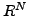

We propose and analyze a pseudo-transient continuation algorithm for dynamics on subsets of . Examples include certain flows on manifolds and the dynamic formulation of bound-constrained optimization problems. The method gets its global convergence properties from the dynamics and inherits its local convergence properties from any fast locally convergent iteration.